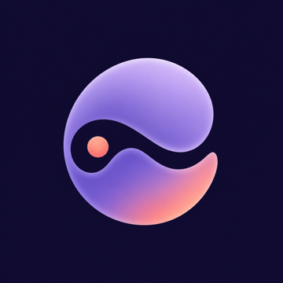

iOSND Haptic uses your phone's built-in haptic motor to play adjustable, timed rhythms. Fully offline — no account, no external device.
From Steady Touch and Breathing Rhythm to Echo Taps and Triple Beat.
Relative intensity 1–10, Gentle, Standard or Brisk tempo, and a 1–15 minute timer.
Detects your phone's haptic capability and calibrates light, medium and high levels.
Create and edit your own patterns. A one-time purchase unlocks them for good.
Pause, resume or stop instantly. Output stops when the app leaves the foreground or the screen locks.
No account, no ads, no analytics. Settings and history stay on this device.
Session options
从平稳轻触、呼吸节奏，到回声轻叩、三拍律动。
1–10 级相对强度，舒缓、标准、明快三档节奏，1–15 分钟定时。
自动检测手机的触觉能力，并完成轻、中、高三档校准。
创建和编辑自己的触觉模式，一次购买永久解锁。
可暂停、继续或立即停止。应用进入后台或锁屏时自动停止输出。
无需账号，无广告，无分析。设置和记录只保存在本机。
可选时长
從平穩輕觸、呼吸節奏，到回聲輕叩、三拍律動。
1–10 級相對強度，舒緩、標準、明快三種節奏，1–15 分鐘定時。
自動偵測手機的觸覺能力，並完成輕、中、高三檔校正。
建立和編輯自己的觸覺模式，一次購買永久解鎖。
可暫停、繼續或立即停止。App 進入背景或鎖定螢幕時自動停止輸出。
無需帳號，無廣告，無分析。設定和記錄只儲存在本機。
可選時長
ND Haptic은 휴대폰 내장 햅틱 모터로 조절 가능하고 시간을 정할 수 있는 리듬을 재생합니다. 완전 오프라인으로 작동하며 계정이나 외부 기기가 필요 없습니다.
일정한 터치와 호흡 리듬부터 메아리 터치, 세 박자 리듬까지.
1–10단계 상대 강도, 부드러움·표준·경쾌함 빠르기, 1–15분 타이머.
휴대폰의 햅틱 지원 수준을 감지하고 약·중·강 세 단계로 보정합니다.
나만의 패턴을 만들고 편집하세요. 한 번 구매하면 계속 사용할 수 있습니다.
일시정지, 계속, 즉시 정지할 수 있습니다. 앱이 백그라운드로 가거나 화면이 잠기면 출력이 멈춥니다.
계정, 광고, 분석이 없습니다. 설정과 기록은 이 기기에만 저장됩니다.
세션 시간
ND Haptic は、スマートフォン内蔵の触覚モーターで、調整とタイマー設定ができるリズムを再生します。完全オフラインで動作し、アカウントや外部機器は必要ありません。
安定したタッチや呼吸リズムから、エコータップ、3拍リズムまで。
1〜10 の相対的な強さ、ゆったり・標準・軽快のテンポ、1〜15 分のタイマー。
スマートフォンの触覚機能を検出し、弱・中・強の 3 段階で調整します。
自分だけのパターンを作成・編集できます。一度の購入でずっと使えます。
一時停止、再開、即時停止が可能。アプリがバックグラウンドに移るか画面がロックされると出力を停止します。
アカウント、広告、分析はありません。設定と履歴はこのデバイスにのみ保存されます。
セッション時間